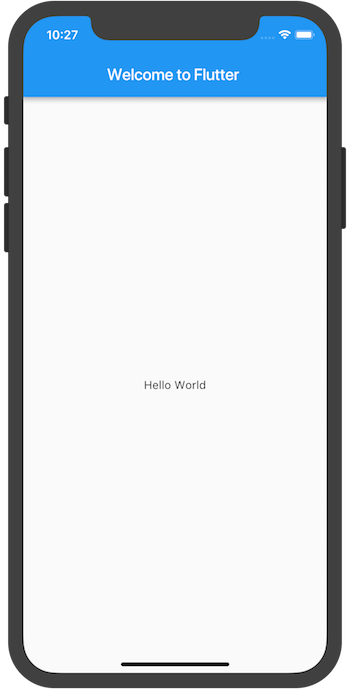
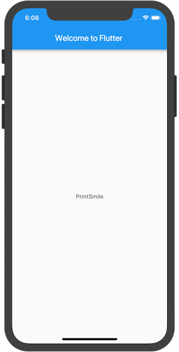

编写第一个 Flutter 应用

这篇教程将指导你创建第一个 Flutter 应用程序。如果你熟悉面向对象程序设计和基本的编程概念（如变量，循环和条件），即可完成本教程。无需具有使用 Dart 语言或移动编程的相关经验。
- 第1步：创建初始Flutter应用
- 第2步：使用外部 package
- 第3步：添加有状态的widget
- 第4步：创建一个无限滚动的 ListView
- 第5步：添加可交互性
- 第6步：导航到新页面
- 第7步：使用主题更改UI
- 干得漂亮！
你需要做什么
完成一个简单的移动应用程序，为一家创业公司进行命名推荐。用户可以选择和取消选择名称，并保存最好的一个。代码一次生成十个名称。当用户滚动时，会新生成一批名称。用户可以点击应用栏右上方的列表图标，跳转到仅显示已被收藏的名称的列表页面。
这个GIF动画可以显示出该应用是如何工作的。
你将会学到:
- Flutter 应用程序的基本结构。
- 查找和使用 package 来扩展功能。
- 使用热加载加快开发效率。
- 如何实现一个有状态的 widget 。
- 如何创建一个无限长度的延迟加载列表。
- 如何创建并导航到第二个页面。
- 如何使用主题更改应用程序的外观。
你将会用到:
需要安装以下工具:
-
Flutter SDK
Flutter SDK 包括 Flutter 的引擎，框架，控件，工具和 Dart SDK 。这个 codelab 需要 v0.1.4 或更高版本。 -
Android Studio IDE
这个 codelab 基于 Android Studio IDE 构建，但也可以使用其他 IDE ，或者从命令行运行。 -
安装 IDE 插件
插件必须为您的编译器单独安装 Flutter 和 Dart 插件。除了Android Studio，Flutter和Dart插件也可用于 VS Code 和 IntelliJIDE。
有关如何设置环境的信息，请参阅 Flutter安装和配置。
第1步：创建初始Flutter应用
使用第一个入门 Flutter 应用中的说明创建一个简单的模板化 Flutter 应用。将项目命名为 startup_namer（而不是myapp）。你将修改这个应用并最终完成它。
在这个 codelab 中，将主要编辑 Dart 代码所在的 lib / main.dart。
-
替换 lib / main.dart 。
删除 lib / main.dart 中的所有代码。替换为下面的代码，它在屏幕中心显示 “Hello World” 。import 'package:flutter/material.dart'; void main() => runApp(new MyApp()); class MyApp extends StatelessWidget { @override Widget build(BuildContext context) { return new MaterialApp( title: 'Welcome to Flutter', home: new Scaffold( appBar: new AppBar( title: new Text('Welcome to Flutter'), ), body: new Center( child: new Text('Hello World'), ), ), ); } } -
运行应用程序。现在应该可以看到下面的页面。

小结
-
本示例创建了一个 Material app 。 Material 设计语言是一套移动设备和网页上的视觉设计标准。Flutter 提供了一套丰富的 Material Widgets 。
-
main 方法采用了 fat arrow (
=>) 表示法，这是一种用于单行函数或方法的简写。 -
该 app 继承了使它本身成为一个 widget 的 StatelessWidget 类。在 Flutter 中，大多数时候一切都可以看作 widget , 包括 alignment，padding 和 layout 。
-
Material 库中的 Scaffold widget 提供了默认的应用栏 (app bar)，标题和构成主页面 widget 树结构的 body 属性。 widget 的子树可以非常复杂。
-
widget 的主要工作是提供一个
build()方法，描述如何根据其他更低层级的 widget，来对这个 widget 进行展示。 -
本示例的 widget 树由包含了 Text child widget 的 Center widget 组成。Center widget 可将它的所有子树对齐到屏幕中心。
第2步：使用外部 package
在这一步，将开始使用名为 english_words 的开源软件包 ，其中包含数千个最常用的英文单词以及一些实用功能。
可以在 pub.dartlang.org 上找到 english_words 软件包以及其他许多开源软件包。
-
pubspec 文件管理着 Flutter 应用程序的静态资源文件(assets)。 在 pubspec.yaml 文件中， 将 english_words（3.1.0或更高版本）添加到依赖列表。新的一行高亮如下：
dependencies: flutter: sdk: flutter cupertino_icons: ^0.1.0 english_words: ^3.1.0 -
在 Android Studio 的 editor 视图中查看 pubspec 时, 点击右上角的 Packages get ，将把 package 拉取到项目中。现在应该可以在控制台中看到以下内容：
flutter packages get Running "flutter packages get" in startup_namer... Process finished with exit code 0 -
在 lib/main.dart 中，为
english_words添加导入，如高亮的行所示：import 'package:flutter/material.dart'; import 'package:english_words/english_words.dart';在键入该行时， Android Studio 会提供有关库导入的建议。然后将导入字符串显示为灰色，让你知道导入的库尚未使用（到目前为止）。
-
改用英文单词的 package 来生成文本，而不是字符串 “Hello World” 。
对代码进行以下更改，如高亮所示：
import 'package:flutter/material.dart'; import 'package:english_words/english_words.dart'; void main() => runApp(new MyApp()); class MyApp extends StatelessWidget { @override Widget build(BuildContext context) { final wordPair = new WordPair.random(); return new MaterialApp( title: 'Welcome to Flutter', home: new Scaffold( appBar: new AppBar( title: new Text('Welcome to Flutter'), ), body: new Center( //child: new Text('Hello World'), // Replace the highlighted text... child: new Text(wordPair.asPascalCase), // With this highlighted text. ), ), ); } } -
如果应用正在运行，请使用 Flutter Hot Reload (热重载)按钮 ()更新应用程序。每次单击按钮或保存项目时，都会看到随机的词组文本，这是因为配对的词组是在 build 方法内部生成的，每次应用需要渲染时，或在 Flutter Inspector 中切换 Platform 时都会运行

有问题吗？
如果应用程序运行不正常，请检查拼写错误。如有需要，可使用以下链接中的代码使项目恢复正常
- pubspec.yaml (pubspec.yaml文件不会再更改。)
- lib/main.dart
第3步：添加有状态的widget
Stateless widgets 是不可改变的，这意味着它们的属性不能改变——所有的值都是 final 的。
Statefulwidget 在其生命周期保持的状态可能会变化，实现一个有状态的 widget 至少需要两个类：StatefulWidgets类和State类，其中StatefulWidgets类创建了一个State类的实例。StatefulWidget类本身是不可变的，但State类可存在于Widget的整个生命周期中。
在这一步，将添加一个有状态的 RandomWords widget ，它可以创建其 State 类 RandomWordsState 。 State 类会为 widget 保存被推荐和被收藏的词组。
-
将有状态的 RandomWords widget 添加到 main.dart 。它可以在 MyApp 类之外的任何位置使用，但当前将把它放在文件底部。 RandomWords widget 除了创建 State 类之外几乎没有任何其他代码：
class RandomWords extends StatefulWidget { @override createState() => new RandomWordsState(); } -
添加 RandomWordsState 类。这个类保存了 RandomWords widget 的状态，该应用程序的大部分代码都放在该类中。这个类将保存随着用户的滑动操作而生成的无限增长的词组，以及保存用户收藏的词组，用户通过触发心形图标来添加或删除收藏的词组列表。
你可以一点点建立这个类。首先，通过以下高亮代码，创建一个最简的类：
class RandomWordsState extends State<RandomWords> { } -
添加这个 state 类之后，IDE 会提示该类缺少 build 方法。接下来，需要添加一个基本的 build 方法，并将生成单词的代码行从 MyApp 类移动到 RandomWordsState 类的 build 方法中，生成词组。
将 build 方法添加到 RandomWordState 中，如高亮代码所示：
class RandomWordsState extends State<RandomWords> { @override Widget build(BuildContext context) { final wordPair = new WordPair.random(); return new Text(wordPair.asPascalCase); } } -
根据高亮部分的更改，从 MyApp 中删除生成单词的代码：
class MyApp extends StatelessWidget { @override Widget build(BuildContext context) { final wordPair = new WordPair.random(); // Delete this line return new MaterialApp( title: 'Welcome to Flutter', home: new Scaffold( appBar: new AppBar( title: new Text('Welcome to Flutter'), ), body: new Center( //child: new Text(wordPair.asPascalCase), // Change the highlighted text to... child: new RandomWords(), // ... this highlighted text ), ), ); } }
重启应用。如果尝试热重载，则可能会看到警告:
Reloading...
Not all changed program elements ran during view reassembly; consider
restarting.这可能是一个误报，但可以考虑重启应用，以确保更改能正常反映在应用的 UI 界面中。
应用程序应该像之前一样运行，每次热重载或保存应用程序时都会显示一个词组。
有问题吗?
如果应用运行不正常，则可以使用以下链接中的代码使其恢复正常
第4步：创建一个无限滚动的 ListView
在这一步，可以扩展 RandomWordsState 类，生成并展示词组列表。当用户滑动列表，ListView widget 中显示的列表将无限增长。 ListView 的 builder 工厂构造函数允许按需建立一个延迟加载的列表 view 。
-
_suggestions变量向 RandomWordsState 类中添加一个数组列表，用来保存推荐词组。 该变量以下划线(_)开头，在 Dart 语言中使用下划线前缀表示强制私有。此外，添加一个
biggerFont变量来增大字体。class RandomWordsState extends State<RandomWords> { final _suggestions = <WordPair>[]; final _biggerFont = const TextStyle(fontSize: 18.0); ... } -
向 RandomWordsState 类添加一个
_buildSuggestions()函数，用于构建一个显示词组的 ListView 。ListView 类提供了一个
itemBuilder属性，这是一个工厂 builder 并作为匿名函数进行回调。它有两个传入参数— BuildContext 上下文和行迭代器i。对于每个推荐词组都会执行一次函数调用，迭代器从 0 开始，每调用一次函数就累加 1 。这个模块允许推荐列表在用户滑动时无限增长。添加如下高亮代码行：
class RandomWordsState extends State<RandomWords> { ... Widget _buildSuggestions() { return new ListView.builder( padding: const EdgeInsets.all(16.0), // The itemBuilder callback is called once per suggested word pairing, // and places each suggestion into a ListTile row. // For even rows, the function adds a ListTile row for the word pairing. // For odd rows, the function adds a Divider widget to visually // separate the entries. Note that the divider may be difficult // to see on smaller devices. itemBuilder: (context, i) { // Add a one-pixel-high divider widget before each row in theListView. if (i.isOdd) return new Divider(); // The syntax "i ~/ 2" divides i by 2 and returns an integer result. // For example: 1, 2, 3, 4, 5 becomes 0, 1, 1, 2, 2. // This calculates the actual number of word pairings in the ListView, // minus the divider widgets. final index = i ~/ 2; // If you've reached the end of the available word pairings... if (index >= _suggestions.length) { // ...then generate 10 more and add them to the suggestions list. _suggestions.addAll(generateWordPairs().take(10)); } return _buildRow(_suggestions[index]); } ); } } -
对于每个词组，
_buildSuggestions函数都调用一次_buildRow函数。这个函数每次会在一个 ListTile widget 中展示一条新词组，这将在下一步操作中，使一行数据更有表现力。添加
_buildRow函数到 RandomWordsState 类中：class RandomWordsState extends State<RandomWords> { ... Widget _buildRow(WordPair pair) { return new ListTile( title: new Text( pair.asPascalCase, style: _biggerFont, ), ); } } -
更新 RandomWordsState 类的 build 方法来使用
_buildSuggestions()函数，而不是直接调用单词生成库。对高亮部分进行修改：class RandomWordsState extends State<RandomWords> { ... @override Widget build(BuildContext context) { final wordPair = new WordPair.random(); // Delete these two lines. Return new Text(wordPair.asPascalCase); return new Scaffold ( appBar: new AppBar( title: new Text('Startup Name Generator'), ), body: _buildSuggestions(), ); } ... } -
更新 MyApp 类的 build 方法。从 MyApp 中删除 Scaffold 和 AppBar 实例。这些将由 RandomWordsState 类进行统一管理，这样在下一步操作中，可以使用户从一个页面导航到另一页面时，更方便的更改应用栏中的页面名称。
用下面高亮的 build 方法替换原始代码：
class MyApp extends StatelessWidget { @override Widget build(BuildContext context) { return new MaterialApp( title: 'Startup Name Generator', home: new RandomWords(), ); } }
重启应用程序，将可以看到一个词组清单。尽量向下滑动，将继续看到新的词组。
有问题吗?
如果应用运行不正常，则可以使用以下链接中的代码使其恢复正常
第5步：添加可交互性
在这一步，将为每一行添加可点击的心形图标。当用户点击列表中的条目，切换其“收藏”状态，词组就会添加到收藏栏，或从已保存词组的收藏栏中删除。
-
添加一个 Set 集合
_saved到 RandomWordsState 类。保存用户收藏的词组。Set 集合比 List 更适用于此，因为它不允许重复元素。class RandomWordsState extends State<RandomWords> { final _suggestions = <WordPair>[]; final _saved = new Set<WordPair>(); final _biggerFont = const TextStyle(fontSize: 18.0); ... } -
在
_buildRow函数中，添加alreadySaved标志检查来确保一个词组还没有被添加到收藏。Widget _buildRow(WordPair pair) { final alreadySaved = _saved.contains(pair); ... } -
在
_buildRow()的 ListTiles widget 中，添加一个心形图标来使用收藏功能，随后将添加与心形图标进行交互的功能。添加以下高亮代码行：
Widget _buildRow(WordPair pair) { final alreadySaved = _saved.contains(pair); return new ListTile( title: new Text( pair.asPascalCase, style: _biggerFont, ), trailing: new Icon( alreadySaved ? Icons.favorite : Icons.favorite_border, color: alreadySaved ? Colors.red : null, ), ); } -
重启应用。现在应该可以在每一行看到心形图标，但还没有交互功能。
-
在
_buildRow函数中使心形可点击。如果词条已经被加入收藏，再次点击它将从收藏中删除。当心形图标被点击，函数将调用setState()通知应用框架state已经改变。添加高亮代码行：
Widget _buildRow(WordPair pair) { final alreadySaved = _saved.contains(pair); return new ListTile( title: new Text( pair.asPascalCase, style: _biggerFont, ), trailing: new Icon( alreadySaved ? Icons.favorite : Icons.favorite_border, color: alreadySaved ? Colors.red : null, ), onTap: () { setState(() { if (alreadySaved) { _saved.remove(pair); } else { _saved.add(pair); } }); }, ); }
热重载应用。可以点击任意一行来收藏或取消收藏条目。 请注意，点击一行可以产生从心形图标展开的泼墨动画效果。
有问题吗?
如果应用运行不正常，则可以使用以下链接中的代码使其恢复正常。
第6步：导航到新页面
在这一步，将添加一个显示收藏夹的新页面(在 Flutter 中称为 route(路由))。你将学习如何在主路由和新路由之间导航。
在 Flutter 中， Navigator 管理着包含了应用程序所有路由的一个堆栈。将一个路由push到 Navigator 的堆栈，将显示更新为新页面路由。将一个路由 pull 出 Navigator 的堆栈，显示将返回到前一个页面路由。
-
在 RandomWordsState 类的 build 方法中，向 AppBar 添加一个列表图标。当用户点击列表图标时，包含了已收藏条目的新路由将被 push 到 Navigator 堆栈并显示新页面。
将该图标及其相应的 action 操作添加到 build 方法中：
class RandomWordsState extends State<RandomWords> { ... @override Widget build(BuildContext context) { return new Scaffold( appBar: new AppBar( title: new Text('Startup Name Generator'), actions: <Widget>[ new IconButton(icon: new Icon(Icons.list), onPressed: _pushSaved), ], ), body: _buildSuggestions(), ); } ... } -
向 RandomWordsState 类添加一个
_pushSaved()函数。class RandomWordsState extends State<RandomWords> { ... void _pushSaved() { } }重新加载应用程序。列表图标将出现在应用栏中。点击它不会有任何响应，因为
_pushSaved这个函数还未实现功能。 -
当用户点击应用栏中的列表图标时，将建立一个新路由并 push 到 Navigator 的路由堆栈中，这个操作将改变界面显示，展示新的路由页面。
新页面的内容使用匿名函数在 MaterialPageRoute widget的
builder属性中创建。将函数调用添加到 Navigator.push 中作为参数,如高亮代码所示，将路由 push 到 Navigator 的堆栈中。
void _pushSaved() { Navigator.of(context).push( ); } -
添加 MaterialPageRoute widget 及其 builder 属性。先添加生成 ListTile widget 的代码。其中 ListTile 的
divideTiles()方法为每个 ListTile widget 之间添加水平间距。divided变量保存最终生成的所有行，并用toList()函数转换为列表。void _pushSaved() { Navigator.of(context).push( new MaterialPageRoute( builder: (context) { final tiles = _saved.map( (pair) { return new ListTile( title: new Text( pair.asPascalCase, style: _biggerFont, ), ); }, ); final divided = ListTile .divideTiles( context: context, tiles: tiles, ) .toList(); }, ), ); } -
builder 属性返回一个 Scaffold widget ，其中包含了应用栏标题名为 “Saved Suggestions” 的新路由页面。新页面的body属性由包含多个 ListTile widget 的 ListView 组成。
添加如下高亮代码：
void _pushSaved() { Navigator.of(context).push( new MaterialPageRoute( builder: (context) { final tiles = _saved.map( (pair) { return new ListTile( title: new Text( pair.asPascalCase, style: _biggerFont, ), ); }, ); final divided = ListTile .divideTiles( context: context, tiles: tiles, ) .toList(); return new Scaffold( appBar: new AppBar( title: new Text('Saved Suggestions'), ), body: new ListView(children: divided), ); }, ), ); } -
热重载应用程序。对一些条目点击收藏，然后点击应用栏右侧的列表图标。显示出包含收藏夹列表的新页面。注意，Navigator 会在应用栏左侧添加一个“返回”按钮。不必再显式实现 Navigator.pop 。点击返回按钮会返回到主页面。
有问题吗?
如果应用运行不正常，则可以使用以下链接中的代码使其恢复正常。
第7步：使用主题更改UI
在最后一步中，将使用该应用的主题。 theme 控制的是应用程序的观感。可以使用默认主题，该主题取决于使用的模拟器或真机，也可以自定义主题以反映你的品牌。
-
可以通过配置 ThemeData 类轻松更改应用程序的主题。应用程序目前使用默认主题，现在将更改主要颜色为白色。
将高亮代码添加到 MyApp 类中，可以把应用程序的主题更改为白色：
class MyApp extends StatelessWidget { @override Widget build(BuildContext context) { return new MaterialApp( title: 'Startup Name Generator', theme: new ThemeData( primaryColor: Colors.white, ), home: new RandomWords(), ); } } -
热重载应用程序。请注意，整个背景都是白色的，甚至包括应用栏。
-
作为读者的练习，可使用 ThemeData 来改变用户界面的其他方面。 Material 库中的 Colors 类提供了多种可以使用的颜色常量，而热重载使用户界面的修改变得简单快捷。
有问题吗?
如果又不能正常运行了，请使用以下链接中的代码查看最终应用的代码。
干得漂亮！
您已经编写了一个可在 iOS 和 Android 上运行的交互式 Flutter 应用程序。在这个codelab中，已经完成了：
- 从头开始创建一个 Flutter 应用程序。
- 编写 Dart 语言代码。
- 使用外部的第三方库。
- 使用热重载加快开发。
- 实现了一个有状态的 widget，为你的应用增加可交互性。
- 用 ListView 和 ListTiles 创建了一个延迟加载的无限滚动列表。
- 创建了一个路由，并添加在主页面路由和新路由之间跳转的逻辑。
- 学习如何使用主题更改应用程序的UI外观。
下一步